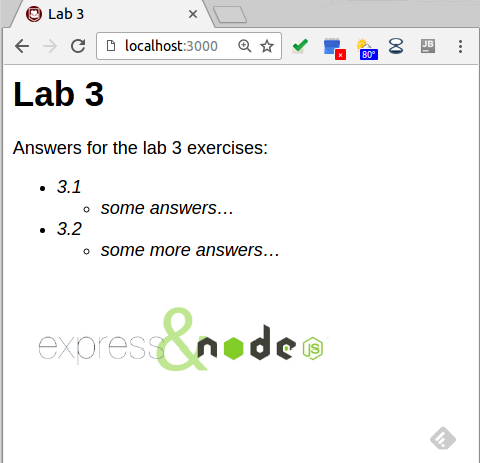

Lab 03
-
3.1
-
a) Node.js is a framework that handles running javascript on the server side. It also allows for easy installation of packages to augment vanilla javascript
-
b) Express.js is a package that can be downloaded using the Node Package Manager that encapsulates web requests and routing including static file serving
-
3.2
-
a) The files are static because they are resource files that exist before the server runs and can be served to the users. They are not webpages modified by javascript or source code.
-
b) The server does serve the Hello World message because this message is on a different route than the static files. The routes are built by express.
-
3.3
-
a) The style.css is loaded first followed by the script and finally the image in the html each took about 1ms
-
b) The static files only show up in the Network tab on demand which seems about right, each file took about 1ms according to firefox dev tools
